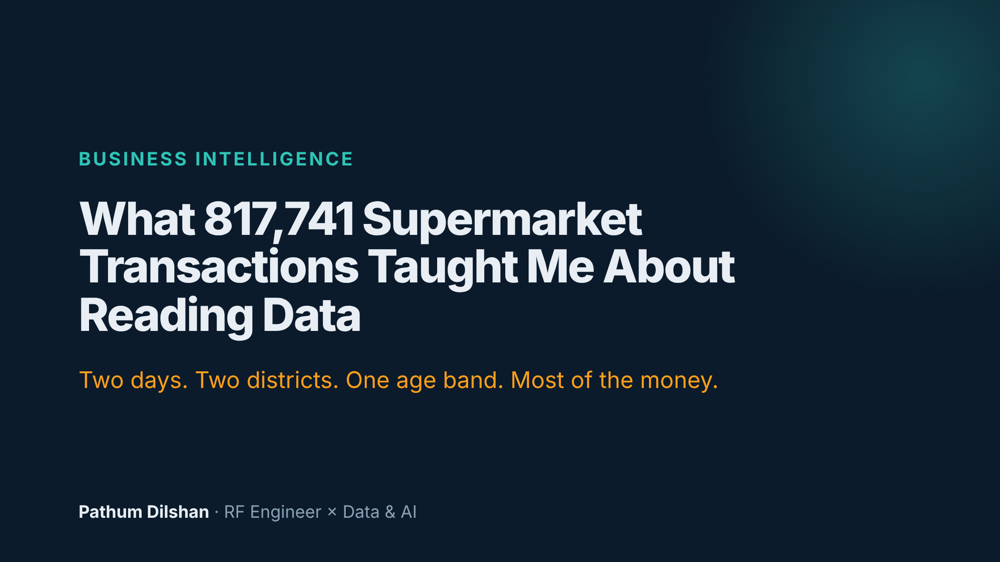
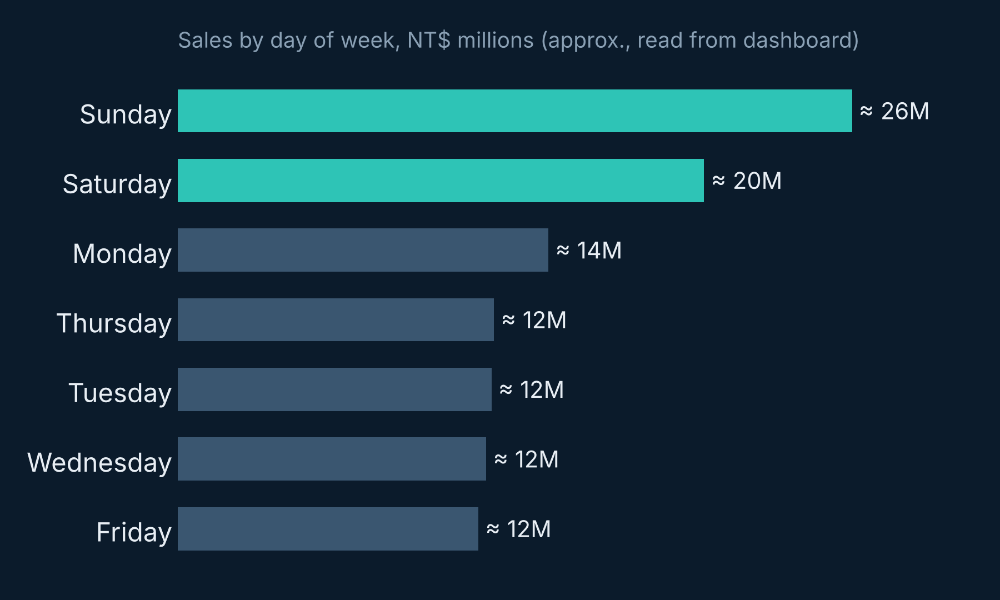

What 817,741 Supermarket Transactions Taught Me About Reading Data
Five findings from a Looker Studio dashboard, and the one that wasn't a finding at all

For a business intelligence project I built a Looker Studio dashboard on a public supermarket dataset: 817,741 transactions from a Taiwanese supermarket between November 2000 and February 2001. Total sales: NT$107.8 million. Gross profit: NT$16.2 million. About 32,300 customers.
The dataset is old, but the patterns in it are the kind every retailer has. Here's what stood out.
1. The weekend is almost half the week

Sunday alone brought in about NT$26M, and Saturday about NT$20M. Together that's roughly 43% of all sales in two days. Monday to Friday sit almost flat at NT$12–14M each.
For a store manager, that's a staffing schedule, a stock-replenishment plan and a promotion calendar in one chart.
2. Two districts carry the business
Customers from Nangang (NT$37.9M) and Xizhi (NT$31.5M) account for about 64% of sales. Every other district is a long tail. If you're deciding where to spend a marketing budget, that's a very short list.
3. Customers aged 30–44 are the core
The 35–39 age band is the single biggest group at 22.6% of sales, followed by 30–34 (18%) and 40–44 (17.5%). Together, 30–44 year-olds drive almost 60% of revenue: likely families doing the weekly shop, which also explains the weekend peak.
4. Holidays show up as spikes
The daily sales line jumps to its highest point in late January 2001, just before Lunar New Year. Seasonal events like this are why you never compare one month with another without context.
5. The finding that wasn't a finding
In late December the daily sales line drops to almost zero for several days. My first reaction was "something happened to the business." But a supermarket doesn't lose almost all its sales for a week and then bounce straight back. Much more likely, those days are missing from the data.
This is the most important lesson in the whole project: before you explain a pattern, check it's real. A dashboard makes every number look equally trustworthy. Your job as an analyst is to know which ones aren't.
What I'd do next
- Break the weekend peak down by product category to see what people actually buy.
- Check margin, not just sales, by district: big revenue doesn't always mean big profit.
- Flag missing dates on the chart itself, so nobody misreads them.
Good dashboards answer questions. Great ones also tell you when not to trust them.
Pathum Dilshan is an RF & Network Planning Engineer at Mobitel, Sri Lanka, and an MSc Data Science & AI student at the University of Moratuwa. He writes about telecom, data and AI. Connect on LinkedIn or visit pmpdilshan.github.io.